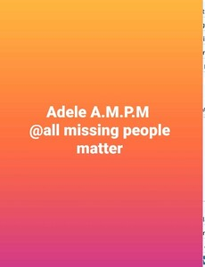

Trade Mark Journal No.2025/046 14 November 2025
UK00004271917 30 September 2025 (35,45)

- Class 35
- Advertising services to promote public awareness of social issues; Advertising services to promote public awareness of medical issues; Advertising services to promote public awareness of environmental issues and initiatives; Advertising services to promote public awareness of environmental matters; Advertising services to promote public awareness of the benefits of shopping locally; The bringing together, for the benefit of others, of a variety of insurance services, enabling consumers to conveniently compare and purchase those services; Advertising services to promote public awareness in the field of social welfare; Advertising services to create brand identity for others; The bringing together, for the benefit of others, of a variety of telecommunications services, enabling consumers to conveniently compare and purchase those services; Analysis of the public awareness of advertising; Advertising services to promote public awareness of medical conditions; Advertising through all public communication means; Promoting the goods and services of others over the Internet; Advertising services to promote public awareness of nephrotic syndrome and focal segmental glomerulosclerosis [FSGS]; Serving as a human resources department for others; Sales promotion for others by means of privileged user cards; Dissemination of advertising for others; Advertising for others; Employment agency services for people skilled in the use of computers; Advice on the analysis of consumer buying habits and needs provided with the help of sensory, quality and quantity-related data; Promoting the goods and services of others; Business intermediary services relating to the matching of potential private investors with entrepreneurs needing funding; Organising of volunteer programmes for others; Promoting the goods and services of others through infomercials; Promoting the goods and services of others through the distribution of discount cards; Promoting the goods and services of others through discount card programs; Promoting the sale of goods and services of others through promotional events; Obtaining business statistics [for others]; Maintaining files and records concerning the medical condition of individuals; Promoting the goods and services of others through advertisements on Internet websites; Business management of sports people; Sales demonstration [for others]; Promoting the goods and services of others by arranging for sponsors to affiliate their goods and services with sporting activities; Advertising on the Internet for others.
- Class 45
- Investigating into missing persons; Missing person investigations; Investigations (Missing person -); Missing persons investigation; Missing persons location information; Locating and tracking of lost people.
Adele Griffiths